この動画で伝える一文
「拙い発信は失望される」と思っている人に、人は他人にさほど興味がなく、10人中8人が素通りしても1人に「相談したい」と届けば発信した価値があり、知らせなければ存在しないのと同じだと伝え、恥ずかしがらず自分の言葉で発信を続けるという手応えを残す。
01の「人は、興味がない。」「だから、発信していい。」と、07の「自分の言葉で。」だけで、同じ主張の背骨が通るようにします。02が、一人に届けば価値があることを、04が、知らせなければ存在しないことを足します。動画の題は「誰もあなたを見ていない。だから発信していい」です。この企画書の題とフォルダ名は、元記事の題のままです。
留保は03と06に置きます。無関心は悪意ではなく、余裕がないだけです。打算と受け取る人もいます。心ない批判もあります。最後は本人の結論で閉じ、視聴者への問いかけや、両論を同じ比重にしたまとめにはしません。「10人中8人」は原稿のたとえで、調査の数字ではありません。声で言い、画面には割合も軸も出しません。
視聴者
拙い内容を出したら失望される、あるいは誰も見ないなら意味がない、と思っている人。見終わったあと、上手くなってから出そうと止める前に、自分の言葉で一つ出せるようにします。
構成と尺
声は理由・留保・本人の結論の範囲を、文字は主張と決め語を、点と線は素通り・届くこと・通り道・雑音を受け持ちます。全文字幕は足しません。写真は使いません。動画は、カット01の最初の約5秒だけ、紙カードの生成映像を全面で使います。そのあと点の列へ戻り、02以降は点と線と文字です。
本編108.5秒、全体114.0秒です。声は503字。5.5字/秒を仮の読み速度とすると約91.5秒です。残りは、7カット×約2秒（声の前0.5秒、後ろ約1.5秒）と、07で結びを受け取る約3秒です。5.5字/秒は、過去の日本語ナレーションの実測（約5.5〜5.7字/秒）に合わせた目安で、語の読みと間で実測は変わります。制作側が声と画を合わせて調整します。3分には伸ばしません。表の秒は0.1秒単位で、合計が108.5秒になるように置いています。尺が足りなければ、05の業者との対比と06の真摯な意見の一文から詰め、01の主張、02の一人、03の留保、04の存在しないこと、07の結論は残します。
| カット | 区間 | この区間で分かってほしいこと | 声／画面 |
|---|---|---|---|
| 01 失望は、来ない。 | 0:00.0–0:13.8（13.8秒） | 興味がないから、失望を恐れず発信していい | 65字／26字 |
| 02 一人に、届く。 | 0:13.8–0:28.0（14.2秒） | 大半は素通りでも、一人が相談したいと思えば価値がある | 67字／9字 |
| 03 悪意では、ない。 | 0:28.0–0:41.3（13.3秒） | 無関心は悪意ではなく、余裕がない | 62字／13字 |
| 04 知らせなければ、無い。 | 0:41.3–0:54.9（13.6秒） | 知らせなければ、存在していないのと同じ | 64字／22字 |
| 05 まず、知る人へ。 | 0:54.9–1:12.5（17.6秒） | 困った人は、信頼できる人にまず聞く | 86字／15字 |
| 06 打算でも、ない。 | 1:12.5–1:30.0（17.5秒） | 打算と取られることもある。雑音は流し、真摯な意見は受け取る | 85字／31字 |
| 07 自分の言葉で、続ける。 | 1:30.0–1:48.5（18.5秒） | 恥ずかしがらず、自分の言葉で発信を続ける | 74字／22字 |
| 08 エンドロゴ | 1:48.5–1:54.0（5.5秒） | 制作表示 | 0字／0字 |
字数は空白・改行を除き、句読点を含みます。画面は各カットの「画面の文字」に掲げた文言の合計です。同一文言の再登場はカットごとに数えます。07の18.5秒には、結びを受け取る約3秒を含みます。
カット表・絵コンテ
各カットの開始と終了を画像で示します。コマ画は構図の設計資料です。番号、はじめ、おわりは画像の外だけに書きます。章表示、テロップ帯、エンドクレジットは入れません。秒数・位置・角度は参考値です。制作側は動きの狙いと可読性を満たす方法を選べます。大きな画面運動を、入口と出口だけに限定しません。カメラの名前はカメラワークと切り替えの名前に合わせ、図の層だけに掛けます。
失望は、来ない。
0:00.0–0:13.8 / 13.8秒 ・ 主張 ・ 声65字／画面26字

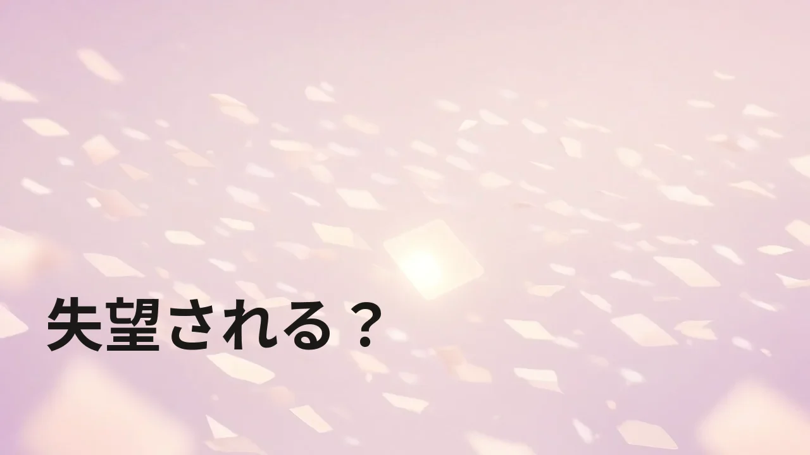

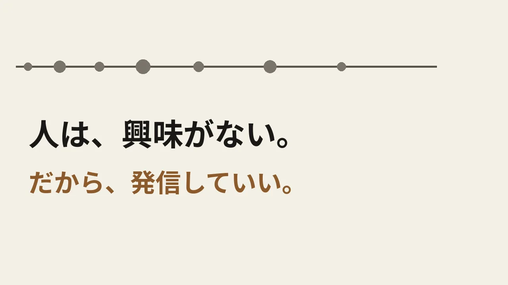
失望される？
人は、興味がない。
だから、発信していい。
拙い内容を出したら、失望されるのではないか。その心配はいりません。人は、他人にさほど興味がありません。だから、発信していいのです。
はじめの約5秒は、紙のカードの映像が画面いっぱいです。下段の左に、大きな一行「失望される？」を映像の上へ組みます。映像の中に文字はありません。約5秒で点の列へ戻したあと、上段に点が右から入り、おわりは上の点が画面の左まで抜け、下段が二行になります。二行目だけ琥珀です。点に番号は付けません。
- 0秒から、生成映像を全面で一度だけ再生する。カードは横へ流れ、中央の一枚が減速して光りながら寄る。この寄りのあいだ、文字は正面の層のまま読む。
- 声は約0.5秒置いて入る。「失望される？」は行のマスクから入り、声の「失望されるのではないか」に着地する。着地の目安は開始から約3秒で、映像の5秒の中にある。
- 映像が終わる約5秒で、光っているカードの面から紙色の全面へ横に振る。上段に点の列が右から入る。「失望される？」はこの振りで退く。小窓にはせず、白く光らせて切り替えず、カードの映像を点の下に残さない。
- 声の「興味がありません」で「人は、興味がない。」が塊で着地し、声の「発信していい」で琥珀の行が入る。この二行は、点の列に戻ったあとの画面に置く。
- 読む間、点は流れ続け、二行の塊は点と逆へゆっくり流す。字形は崩さない。
- 同じ点の列のまま、02へ渡す。ここで止めない。
最初の約5秒の寄りは、生成映像のドリーインです。文字層には掛けません。点の列に戻ったあとは、点の層を右から左へトラッキングします。02の、点へ3秒かけて寄るドリーインは、図形の層のままです。
assets/videos/cut-01-intro-paper-cards.mp4 を、最初の5.04秒、全面で使います。1280×720を、比率を保って1920×1080へ拡大します。画面の文字は制作側が映像の上に組みます。媒体の画面、ロゴ、顔は描きません。詳細は素材。
一人に、届く。
0:13.8–0:28.0 / 14.2秒 ・ 見せ場 ・ 声67字／画面9字

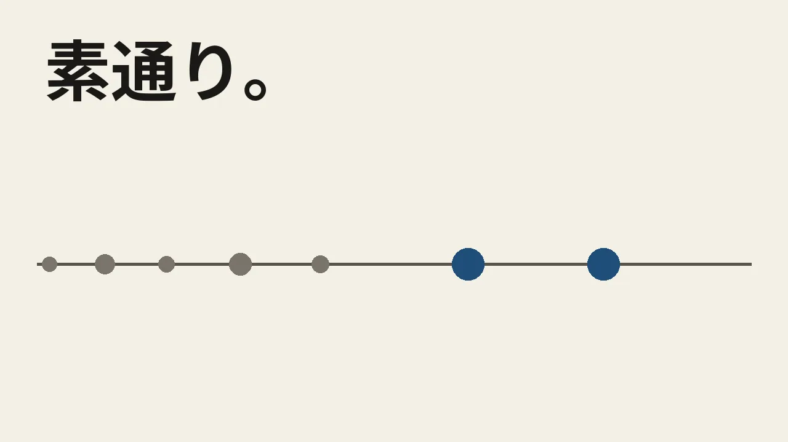

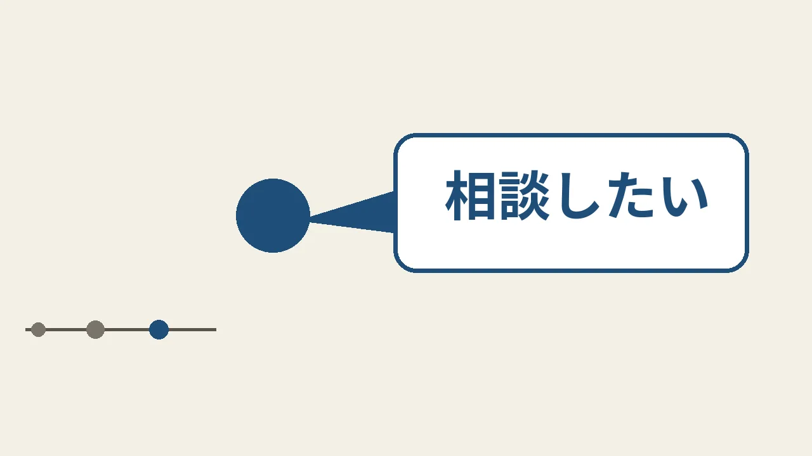
素通り。
相談したい
10人中8人は見向きもしないのが当たり前です。残りの2人に届き、そのうちの1人が、相談したいと思ってくれれば、発信した価値はあります。
はじめは左上の特大「素通り。」と、下段の水平な点の列です。灰が左へ抜け、藍が二つ、右に残ります。おわりは、一つの藍の点が中央近くまで大きくなり、右に吹き出しです。もう一つの藍は小さく、左の線の上で抜けていきます。点は十個に揃えません。吹き出しの中の語は、尾や点と重なりません。
- 「素通り。」は声の「見向きもしない」に着地する。灰の点はそのまま抜け、藍の二つだけ速度を落とす。
- 声の「1人が」から、一つの点が手前へ出る。もう一つは線の上を左へ残す。
- 声の「相談したい」で、吹き出しが尾の側から一塊で出る。その3秒、図のカメラは点へゆっくり寄る（ドリーイン）。文字は正面のまま読む。
- 吹き出しと大きな点が左へ縮み、03の広い余白になる。
ドリーイン、3秒、ゆっくり。掛けるのは点と吹き出しの層です。寄っているあいだも、残りの点は流れます。文字を点のテクスチャにしません。
図形と文字。10人中8人は声のたとえです。画面の点を、割合の図にはしません。
悪意では、ない。
0:28.0–0:41.3 / 13.3秒 ・ 留保 ・ 声62字／画面13字

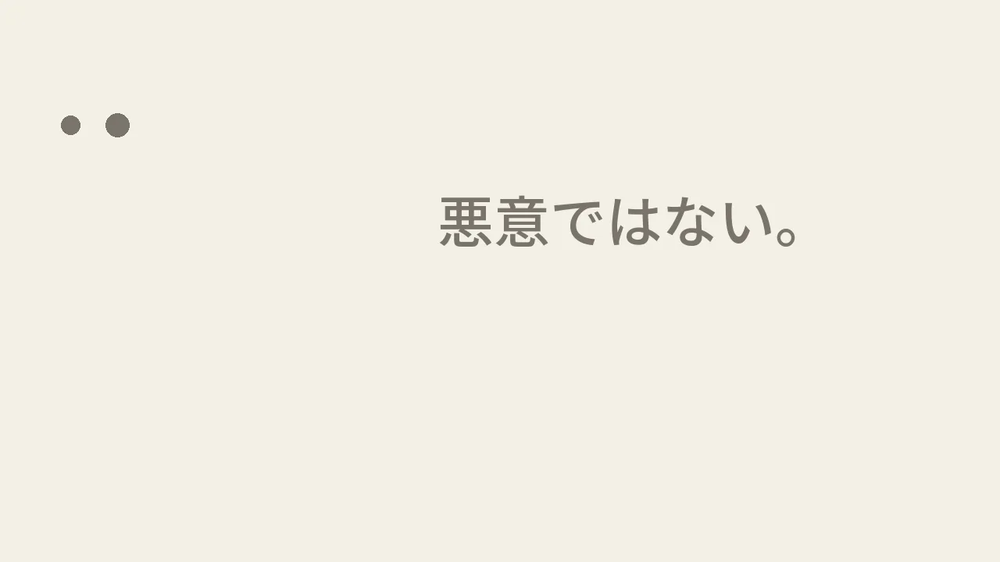

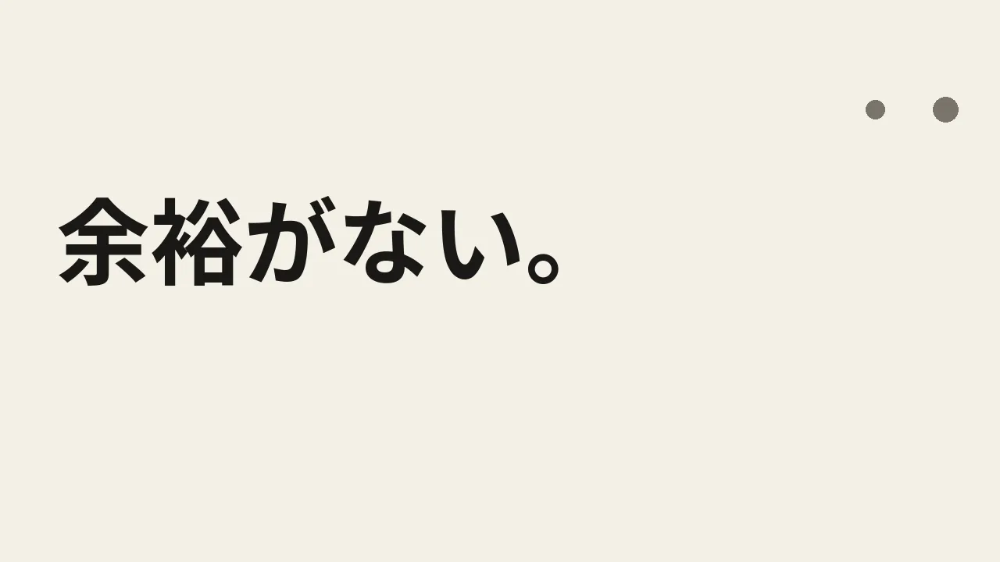
悪意ではない。
余裕がない。
冷たく聞こえるかもしれません。悪気があって無関心なのではなく、自分の生活と仕事で精一杯で、他人を気にかける余裕がないのです。
はじめは右寄りの灰の一行と、左上に小さな点です。広い左が、余裕の無さです。おわりは左の特大「余裕がない。」と、右上の端に残る点です。重心が右から左へ移ります。
- 02の吹き出しが退いたあと、点の間隔が開く。「悪意ではない。」は声の「無関心なのではなく」に、灰のまま着地する。
- 「余裕がない。」は声の「余裕がない」に、塊のまま大きく着地する。
- 読む間、残った点は端で流れ、余白は少しずつ広がる。語は端で切らない。
- 余白の下辺が、04の水平の線になる。
点の層を少し引き、余白が画面の半分を超えるところまで見せて止める。寄るのは語の塊ではなく、空きの広がりです。
図形と文字。無関心を、誰かの悪意には描きません。
知らせなければ、無い。
0:41.3–0:54.9 / 13.6秒 ・ 根拠 ・ 声64字／画面22字

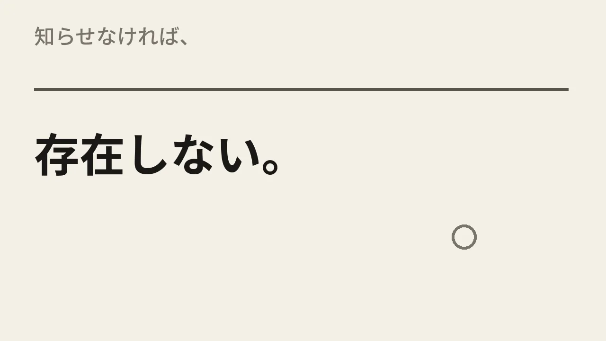

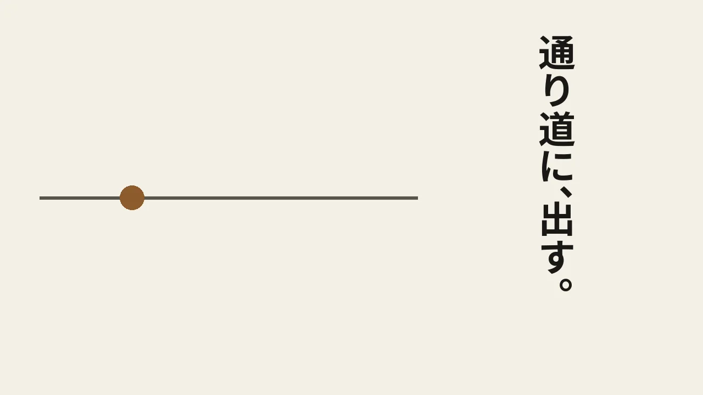
知らせなければ、
存在しない。
通り道に、出す。
どれほど良い仕事でも、自ら知らせなければ、存在していないのと同じです。掘り出し物は、掘り出されやすい場所にいてこそ見つかります。
はじめは上の灰の一行、その下の水平な線、左下の特大「存在しない。」、線より下の輪郭だけの丸です。丸は線に乗っていません。おわりは、琥珀に塗られた点が線の上にあり、右は縦書きの一行です。01の横二行とも、02の吹き出しとも組が違います。
- 線が左から描かれ、「存在しない。」は声の「存在していないのと同じ」に着地する。輪郭の丸は線の下に残る。
- 声の「掘り出されやすい場所」で、丸が線の上へ上がり、琥珀に塗られる。「通り道に、出す。」が縦に入る。
- 読む間、乗った点は線の上を左から右へ進む。縦の列は正面のままです。
- 進んだ点が、05の弧の起点になる。
線の下の丸から、線の上へクレーンアップする。縦の文字が読める位置で止める。文字を床には寝かせません。
図形と文字。テーブルは描きません。通り道は、原稿の「掘り出されやすい場所」の動画の形です。
まず、知る人へ。
0:54.9–1:12.5 / 17.6秒 ・ 根拠 ・ 声86字／画面15字

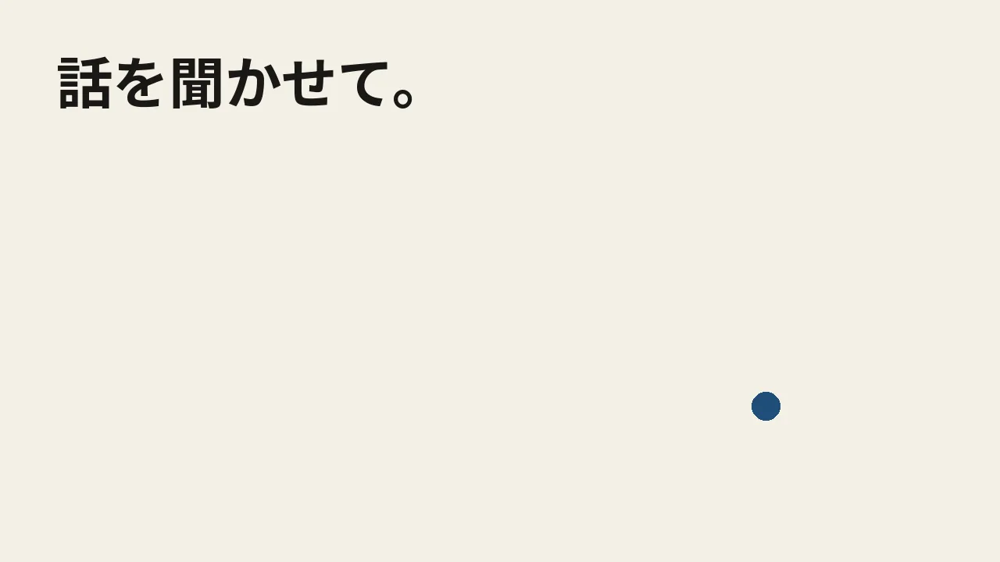

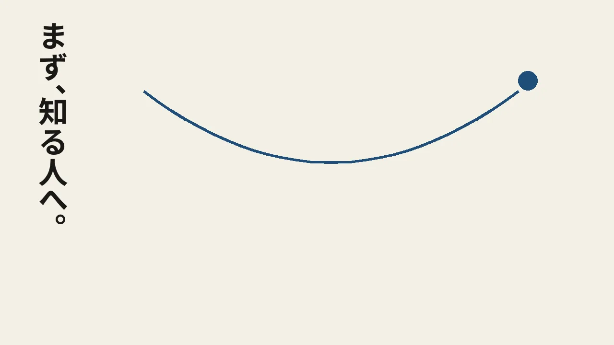
話を聞かせて。
まず、知る人へ。
自分の仕事を書いたら、ちょうど困っていた人から、話を聞かせてほしいと連絡が来ました。困ったとき、人は、どこの誰ともわからない業者より、信頼できる人にまず相談したいものです。
はじめは左上の横一行と、右下の小さな藍の点です。吹き出しは出しません。おわりは左の縦書きと、点から左へ寄って語の手前で止まる弧です。04の縦書きは右、ここは左です。
- 「話を聞かせて。」は声の「話を聞かせてほしい」に着地する。
- 声の「相談したいものです」で、弧が点から描かれ、縦の「まず、知る人へ。」が入る。弧は文字に触れません。
- 読む間、点は弧の上を少し進み、縦の列は正面のまま逆へゆっくり流す。
- 弧が上へ跳ね、06の斜線になる。
右下の点から、弧に沿ってパンする。縦の列が安全域に入ったところで止める。
図形と文字。連絡は一回の話です。いつもそうなる図にはしません。相談の中身、製品名、相手の名は出しません。
打算でも、ない。
1:12.5–1:30.0 / 17.5秒 ・ 留保 ・ 声85字／画面31字

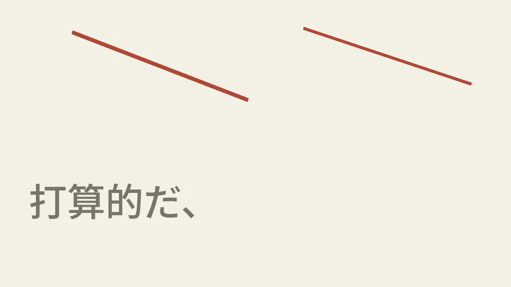

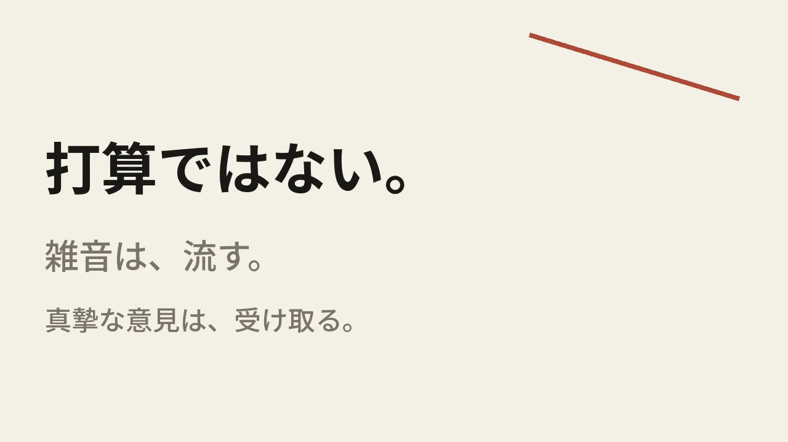
打算的だ、
打算ではない。
雑音は、流す。
真摯な意見は、受け取る。
打算的だと受け取る人もいるかもしれません。それでも、困っている人に届ける発信は、打算ではありません。心ない批判もあります。真摯な意見だけを受け取り、大半の雑音は流します。
はじめは下段の灰の一行と、その上を横切る珊瑚の斜線です。斜線は語に届きません。おわりは左揃えの三段です。一段目が大きく、二段目と三段目は灰で、段ごとに小さくなります。点の列はここには置きません。
- 「打算的だ、」は声の「受け取る人もいる」まで残る。斜線は語の手前で切れる。
- 声の「打算ではありません」で斜線が右上へ抜け、「打算ではない。」が塊で着地する。
- 「雑音は、流す。」は声の「雑音は流します」に、「真摯な意見は、受け取る。」は声の「真摯な意見」に合わせ、決め語より小さく残す。読む間も、端の斜線は流れ続ける。
- 斜線が落ち、07の止まった点の列が上に残る。
斜線の方向へ少しパンしてから、三段が読める幅まで戻す。斜線は図の層で、文字に重ねません。
図形と文字。打算と受け取る人がいること、心ない批判があることは、声でも画面でも残します。
自分の言葉で、続ける。
1:30.0–1:48.5 / 18.5秒 ・ 本人の結論 ・ 声74字／画面22字

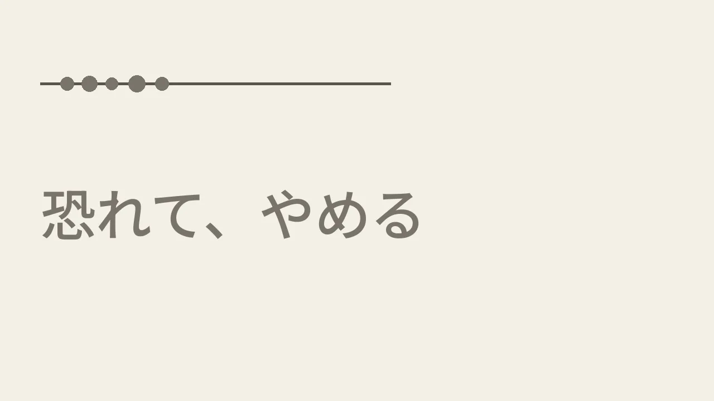

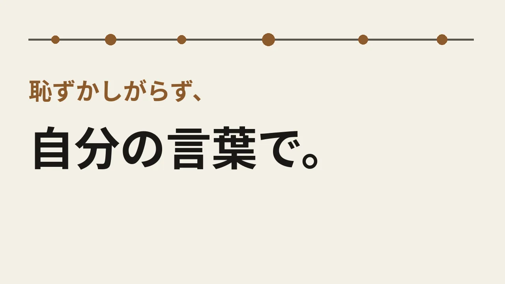
恐れて、やめる
恥ずかしがらず、
自分の言葉で。
失望されるのを恐れて、発信をやめてしまうことこそ、一番の損失です。他人は、自分のことで忙しい。だから、恥ずかしがらずに、自分の言葉で発信を続けます。
はじめは上の短い線に点が固まり、下に灰の大きな一行です。おわりは上の線を琥珀の点が横切り、その下に琥珀の「恥ずかしがらず、」、さらに下に墨の特大「自分の言葉で。」です。01の二行より、下の一行が画面の幅を使います。
- 「恐れて、やめる」は声の「やめてしまうことこそ」まで残る。点は固まったまま、線の上で止まっている。
- 声の「自分のことで忙しい」から点がほどけ、声の「自分の言葉で」に「自分の言葉で。」が着地する。「恥ずかしがらず、」はその上に残す。
- 声の結びを受け取る約3秒、語と点を一つの塊として寄せて拡大する。点は流れ続ける。
- そのあと画面を横へ振ってライムの全面へ渡す。白く光らせて切り替えません。
固まった点から特大の行へ引き、最後の3秒は図の層を少し寄る。最後の振りは、ロゴの動きが始まる前に終えます。読ませる語は床に寝かせません。
図形と文字。01の「発信していい。」が、自分の言葉を流し続ける状態で閉じます。
エンドロゴ
1:48.5–1:54.0 / 5.5秒 ・ 制作表示 ・ 声0字／画面0字

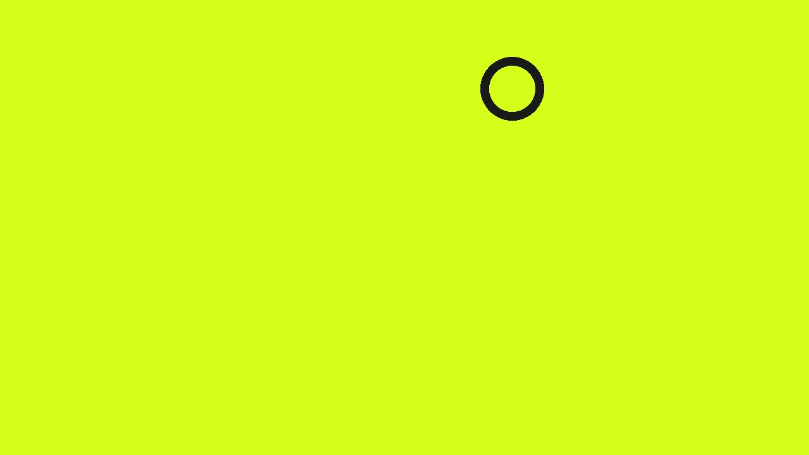

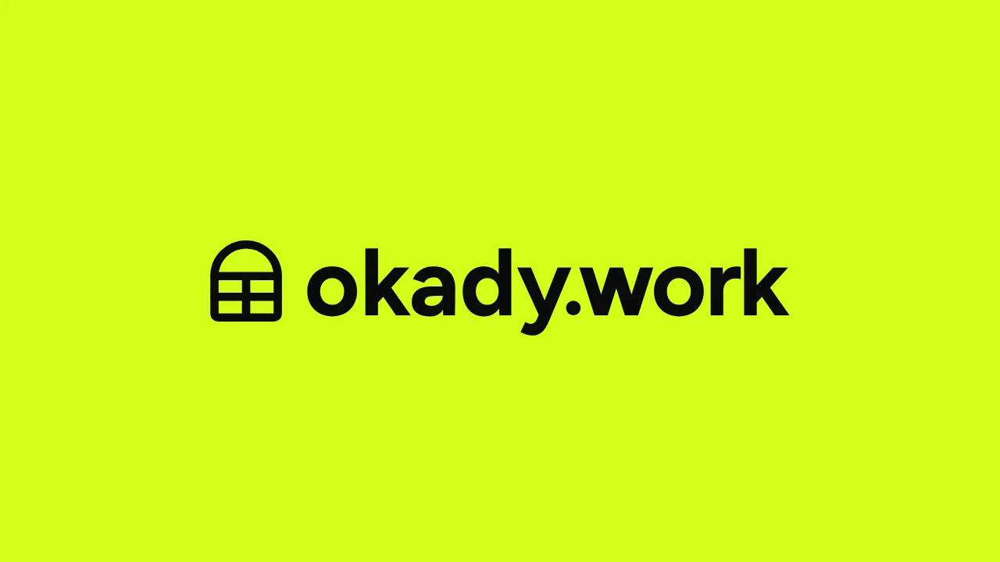
なし（ロゴのみ）
なし
背景は #d2ff1a。ロゴは中央。形、書体、色、比率は変えない。本編の要素は重ねません。
- 0–2.6秒：原本 SVG の o の落下、バウンド、定位置への移動。
- 2.6–3.2秒：全体が左へスライド。3.0–4.0秒：「.work」が一文字ずつ出現。
- 4.0–5.5秒：完成状態を1.5秒保持する。BGMもここで収める。
ロゴの区間は固定。本編からの振りは、この動きが始まる前に終えます。
リポジトリ直下の okady-work-logo.svg。フレーム時刻から再現します。

詳細（ここから下は補足）
声・文字・素材の分担
| 担当 | 受け持つこと | 扱い |
|---|---|---|
| 声 | 失望の心配がいらないこと、10人中8人のたとえ、悪意ではないこと、存在しないこと、一回の連絡、業者より信頼できる人、打算と雑音、本人の結論 | 画面の短い語と意味を合わせる。画面の全文の朗読にはしない。カット単位のまとまった文で渡す。 |
| 文字 | 興味がない、発信していい、素通り、相談したい、余裕がない、存在しない、通り道、打算ではない、自分の言葉 | 説明の全文は載せない。主語が要る場面は二行まで、縦書きは04と05だけ使う。 |
| 図形 | 点の列に戻ったあとの流れる点、減速する二つの点、吹き出し、広い余白、線の下の丸、通り道の線、弧、斜線 | 一つの形に複数の意味を持たせない。対応は記号と色。 |
| 動画 | カット01の最初の約5秒。紙のカードが横へ流れ、一枚が光りながら寄る | 全面で一度だけ見せ、文字は上に組む。終わったら点の列へ戻す。02以降には使わない |
ナレーションありの構成です。音声の制作は制作側の担当で、音源がまだ無いことは引き渡しを止める理由にしません。
主張・根拠・留保の対応
| 役割 | 内容 | カット |
|---|---|---|
| 主張 | 人は他人にさほど興味がない。だから、失望を恐れず発信していい。 | 01・07 |
| 主張 | 10人中8人が素通りしても、1人が相談したいと思えば、発信した価値がある。 | 02 |
| 留保 | 無関心は悪意ではなく、自分の生活と仕事で精一杯で、余裕がない。 | 03 |
| 根拠 | 知らせなければ、存在していないのと同じ。掘り出されやすい場所にいてこそ見つかる。 | 04 |
| 根拠 | 仕事を知らせたら、困っていた人から話を聞かせてほしいと連絡が来た。困った人は、見知らぬ業者より信頼できる人にまず相談する。 | 05 |
| 留保 | 打算と受け取る人もいる。心ない批判もある。真摯な意見だけを受け取り、大半の雑音は流す。 | 06 |
| 結論 | やめてしまうことが一番の損失。恥ずかしがらず、自分の言葉で発信を続ける。 | 07 |
原稿の文との対応、画面の文言と要約の区別、この動画に載せなかった論点は references.md。
企画側／制作側
| 企画側で用意するもの | 制作側で仕上げるもの |
|---|---|
| 現行の文言、声の原稿、配分、絵コンテ16枚、原稿との対応、演出の採否、カット01冒頭の生成映像1本 | three.js と文字層の実装、映像の拡大と点の列へのつなぎ、細かな動きと同期、声、BGM、効果音、代表区間の試作と全編の書き出し |
| 静止コマの文字配置の点検 | 動いている全カットの安全域と重なりの検査、実速再生、音の終わり方の確認 |
企画と絵コンテ、カット01冒頭の映像はこの一式です。音声と本編は制作側が担当します。これ以外の画像や動画が必要になったら、必要な内容を企画側へ返します。制作側は動画AIで新規の素材を作りません。
requestAnimationFrame のループを本編の動きにしません。デザインシステム（映像の文字・色・グリッド）
紙色 #F4F0E6、墨 #1A1916、灰 #7A746C、点の藍 #1F4E79、自分の言葉の琥珀 #8C5A2B、雑音の珊瑚 #B04834、通り道の線 #5A544C。吹き出しの面は白に、藍の輪郭です。ライム #d2ff1a はロゴだけに使います。文字は Noto Sans JP、見出し700–900、補足400–500。制作側が OFL に沿って用意します。このフォルダには同梱しません。企画書の配色とは別です。紙色の上の図は、輪郭か、紙より暗い面にします。
| 段 | 1920×1080の参考値 | 用途 |
|---|---|---|
| 大きな語 | 140–200px | 01の「興味がない。」、02の「素通り。」、03の「余裕がない。」、04の「存在しない。」、07の「自分の言葉で。」 |
| 主文 | 80–120px | 01の「発信していい。」、02の吹き出し、06の「打算ではない。」 |
| 短い語 | 40–64px | 04の「知らせなければ、」、06の灰の二行、07の「恥ずかしがらず、」、縦書き |
外側余白は96pxを目安にします。文字の安全域は左右64px、上下48px。1280×720の絵コンテでは左右48px、上下36pxです。01のはじめの約5秒は映像の全面と下段の一行、戻ったあとは上の点と下の二行、02は左上の特大から中央の吹き出し、03は右の一行から左の特大、04は横の特大から右の縦書き、05は左上の横一行から左の縦書き、06は下の一行から左の三段、07は固まった点から幅いっぱいの特大です。
動きの言語
| 動作 | 意味と使う場所 | 読む間・次へのつながり |
|---|---|---|
| カードが流れ、一枚が寄る | 01の最初の約5秒。紙のカードが横へ流れ、一枚が減速して光りながら寄る。 | 全面で見せ、文字は上に組む。約5秒で紙色へ横に振り、点の列へ渡す。 |
| 点が流れる | 01で点の列に戻ったあと。タイムラインを、近い点ほど速く右から左へ流す。 | 語の塊は逆へ流し、列を止めずに02へ渡す。 |
| 点が減速し、一つが前へ出る | 02。灰は抜け、藍が二つ残り、一つが吹き出しになる。 | 3秒のドリーインのあいだも、残りの点は流す。吹き出しは一塊で出す。 |
| 余白が広がる | 03。点の間隔が開き、余裕の無さが見える。 | 空きの下辺を、04の線にする。 |
| 丸が線に乗る | 04。知らせていない仕事が、通り道へ出る。 | 乗った点を線の上で進め、05の弧の起点にする。 |
| 弧が寄る | 05。離れていた点が、言葉の手前まで弧を描く。 | 弧は文字に触れず、06の斜線へ跳ねる。 |
| 斜線が手前で切れる | 06。雑音が、決め語に届かない。 | 抜けたあと三段を残し、斜線を07の上へ落とす。 |
| 点が再び出る | 07。固まっていた点が、自分の言葉として流れ出す。 | 結びの約3秒も塊を寄せて拡大し、横振りでロゴへ渡す。 |
拍の目安は112–120 BPM。01の着地、02で点が前へ出る瞬間、04で丸が線に乗る瞬間、07の着地をアクセントに合わせます。留保の区間にも流れを残します。1字ずつの常時の揺れ、拍ごとの脈動、文字の崩壊は使いません。文字を読ませるために画面全体を静止させず、文量、動かす層、構図で調整します。イージングの値と秒の同期は制作側の裁量です。決め語を声のどの語に合わせるかは、各カットに書いてあります。
記号と色
| 記号 | 意味 |
|---|---|
| 墨の大きな語 | 本人の決め語。01の「興味がない。」、04の「存在しない。」、07の「自分の言葉で。」 |
| 灰の塗った点 | タイムラインを素通りしていくもの。人の顔ではない。数の標本でもない |
| 藍の塗った点 | 速度を落として目に留まったもの。02で二つ。一つはまた流れ、一つが前へ出る。05では、弧の起点 |
| 白地に藍の輪郭の吹き出し | 「相談したい」。02だけ。尾は点から出る。人の口からは出さない |
| 広い余白 | 気にかける余裕がないこと。03。点を置かない空き |
| 線の下の、輪郭だけの丸 | 知らせていない仕事。04のはじめだけ。塗った点とは別の形 |
| 細い水平の線 | 関心が通る通り道。統計の軸ではない。目盛りも数字も付けない |
| 線に乗った琥珀の点 | 通り道に出した、自分の言葉。04のおわりと、07で再び流れる点 |
| 珊瑚の斜線 | 心ない批判、雑音。06だけ。語の手前で切れ、点にはしない |
| 琥珀の語 | 自分から出す言葉。01の「発信していい。」、07の「恥ずかしがらず、」 |
| 灰の小さな語 | 留保。03の「悪意ではない。」、04の「知らせなければ、」、06の下二行、07のはじめの「恐れて、やめる」 |
キャラ設定
人物、顔、手は描きません。点は人の姿ではありません。吹き出しは02の「相談したい」だけに使い、尾は点から出します。口元や会話の画面にはしません。「マネージャー」のような役割の人物も出しません。
差し替え候補
カット01の最初の約5秒は、B（紙カードの生成映像）です。生成は済んでいます。点の流れ、減速、吹き出し、線に乗る丸、弧、斜線は、点の列に戻ったあと、制作側の図形で描きます。02の吹き出し、04の輪郭の丸、06の斜線は、そのカットだけの形です。戻ったあとの点の一部だけを、別の生成映像にはしません。
承認は 2026-11-22 9:34 JST、本人です。承認の範囲は、カット01冒頭の素材1本だけです。ほかのカットの生成は未承認です。
生成元は Grok Imagine。プロンプト（そのまま）：
Light pastel background, endless stream of small paper cards drifting sideways, one card slowly stops and glows, Dolly in 3s slow, no people, no text
ファイルは assets/videos/cut-01-intro-paper-cards.mp4。1280×720、24fps、5.04秒、音声トラックなし、1.27MBです。淡いピンクから藤色の明るい背景で、人物なし、文字なし、ロゴなし。カードが流れ、中央の一枚が光りながら寄ります。仕様は素材。
02以降の点、吹き出し、3秒のドリーインは図形のままです。この映像が使えないときは、01のはじめの約5秒を、紙色の上を灰の点が右から左へ流れる図形に戻します。
素材
| ファイル | 役割 | 使用区間 |
|---|---|---|
assets/storyboard/cut-XX-start.webp と cut-XX-end.webp | 絵コンテ16枚。1280×720。cut-01-start は紙カードの映像に「失望される？」を上に組んだ画。cut-01-end は点の列に戻ったあと。08はライム。ほかは明るい紙色の図形 | 本編に貼る完成素材ではない |
| okady-work-logo.svg | エンドロゴ | 08の全区間。リポジトリ直下の原本。一式を移すときもこの相対位置を保つ |
assets/videos/cut-01-intro-paper-cards.mp4 | 採用済みの導入。紙のカードが横へ流れ、一枚が減速して光る。人物なし、文字なし、ロゴなし。画面の文字は制作側が上に組む | 01の最初の5.04秒。全面。一度だけ再生し、終わったら点の列へ戻す。02以降には使わない |
生成元は Grok Imagine。プロンプト（そのまま）：
Light pastel background, endless stream of small paper cards drifting sideways, one card slowly stops and glows, Dolly in 3s slow, no people, no text
承認は 2026-11-22 9:34 JST、本人です。承認の範囲は、カット01冒頭のこの1本だけです。ほかのカットの生成は未承認です。
仕様は 1280×720、24fps、5.04秒（121フレーム）、音声トラックなし（生成時の音声は削除済み）、1.27MBです。再エンコードしていません。本編の 1920×1080・30fps へは、比率を保って全面に拡大し、フレーム時刻に合わせて一度再生します。
確認した結果は、淡いピンクから藤色の明るい背景（画素の R・G・B の平均は、標本で約225〜227）、人物なし、文字なし、ロゴなし、です。カードが流れ、中央の一枚が光りながら寄ります。
新たに取得する写真とフォントファイルはありません。Noto Sans JP は制作側が用意します。このフォルダには同梱しません。
音
BGMはこの作品のために作ります。乾いた打楽器、短いピアノ、輪郭のある低音。112–120 BPMを目安に、01の着地、02で点が前へ出る瞬間、04で丸が線に乗る瞬間、07の着地を支えるアクセントを付けます。曲を遅くして、画の動きを弱めません。静かな持続音だけで通しません。過去作品の音源は使わず、特に20261007の企画で雰囲気が合わないとされた音源は使いません。
ナレーションは落ち着いた会話調で、カット単位の文として渡します。短い句へ細かく割って、抑揚を壊さないようにします。読みは「失望＝しつぼう」「興味＝きょうみ」「素通り＝すどおり」「10人中8人＝じゅうにんちゅうはちにん」「2人＝ふたり」「1人＝ひとり」「悪意＝あくい」「無関心＝むかんしん」「余裕＝よゆう」「精一杯＝せいいっぱい」「掘り出し物＝ほりだしもの」「業者＝ぎょうしゃ」「打算＝ださん」「真摯＝しんし」「雑音＝ざつおん」。「10人中8人」は画面に書かず、声だけで読みます。
音源はロゴの終わり1:54.0まで覆い、最後の1.5秒で収めます。効果音は、02で点が速度を落とす瞬間、吹き出しが出る瞬間、04で丸が線に乗る瞬間に必要な分だけ付けます。冒頭、02、04、07–08で画と合わせて試し、声を隠さないことと運動感を確認します。
声、BGM、効果音のファイルは制作側が用意します。有料の音楽生成の候補は Lyria 3.5（ユーザー指定の候補名。実行時にモデルID、提供状況、料金を確認）。ローカル制作と、品質・時間・費用で比べた理由を一行残して選びます。ナレーションの候補は Gemini 3.8 Flash TTS、または Eleven v4。名称はユーザー指定の候補で、実行時に識別子を確認します。キーは環境変数から読み、値は書きません。
根拠
原稿との対応は references.md。演出候補の確認と採否は effects-direction.md。採否の履歴を、本編の作業手順には混ぜません。
完成条件・確認状態
- 01の最初は
assets/videos/cut-01-intro-paper-cards.mp4（5.04秒）を一度だけ全面で使い、文字は映像の上に組む。終わったら点の列へ戻り、02以降の点、吹き出し、3秒のドリーインは図形で行う。 - 01と07で、興味がないから発信していいこと、結びは自分の言葉で続けることまで本人の結論で閉じる。
- 02は、大半が素通りしても一人に届けば価値があることを、声のたとえと、点の動きで伝える。画面に割合や軸を出さない。
- 03は、悪意ではないことと、余裕がないことを残す。06は、打算と取られること、心ない批判、真摯な意見だけを受け取ること、雑音は流すことを残す。
- 04は、知らせなければ存在しないことで閉じ、経歴の固有名詞を出さない。05は一回の連絡であり、相談の中身と製品名を出さない。
- 点は顔にしない。吹き出しは02だけ。媒体のロゴと画面、企業名、顧客を特定できる経過は出さない。
- 章表示、テロップ帯、エンドクレジット、白フラッシュは入れない。エンドロゴはライムの単独画面で、原本の動き、中央、1.5秒の保持、音の終了を再生して確認する。
- 絵コンテ16枚（1280×720）を、左右48px・上下36pxの安全域、文字同士、文字と図形（点、線、斜線、弧）の交差で検査した。差し替えた cut-01-start の文字6字の外接矩形は左75px・上470px・右601px・下555pxで、はみ出し0、文字同士の重なり0、図形との交差0（このコマに点・線・斜線・弧はない）。紙カードは背景の映像で、文字を上に組む層なので、カードの面との重なりは図形の交差に数えていない。字形の下のコントラスト比は最小約10.8:1。ほかの15枚も、はみ出し0、文字同士の重なり0、文字と図形の交差0。吹き出しの白い面とその中の「相談したい」は、吹き出しの文言なので面との交差には数えていない。尾と点は文字に重なっていない。ロゴの字形と、08はじめの環はこの検査の文字対象外。終了ロゴのインクは安全域の内側（左269px・上308px・右1010px・下429px）。この検査は静止コマの配置で、本編の合格ではない。
- 本編は未制作。実速再生は未確認。制作側は全カットを0.25秒ごとに取り、左右64px・上下48pxの安全域、文字同士、文字と図の交差を検査する。声の語の時刻と画面の変化を並べ、3秒以上変化のない区間を名指しする。最初の試作は01→02。そのあと04、07–08、最後に全編と音を確認する。